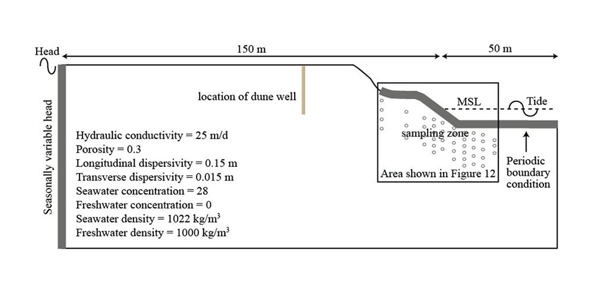

Courses taught
- GEOL3140 Hydrogeology
- ENVI3010 GIS in Earth and Environmental Sciences
- GEOL5250 Groundwater Modeling
- GEOL4260/5260 Lab and Field Methods in Hydrogeology
GEOL3140 Hydrogeology
This course introduces how groundwater moves through the subsurface, how aquifers store and transmit water, and how hydrogeologists collect field data. Students connect classroom ideas to local water resources through campus wells, field measurements, and coastal aquifer examples.
- Merrimack River Hydrogeology Instructional Lab: Students use the outdoor teaching wells on North and South Campus to learn about well drilling, sediment coring, groundwater levels, and hydrological sampling.
- Plum Island field trip: Students visit a beach aquifer to measure groundwater discharge to the ocean, install and sample wells, and survey a beach profile.
- Aquifer testing and groundwater flow: Students practice reading water-level data and estimating aquifer properties from real measurements.

ENVI3010 GIS in Earth and Environmental Sciences
This course teaches students how to use geographic information systems to ask and answer environmental questions. Students build maps, manage spatial data, and use GIS tools to study watersheds, land cover, campus resources, and environmental change.
- GIS Sand Table: Students use a hands-on landscape model to connect topography, water flow, watersheds, and map layers.
- GIS Tree Inventory Project: Students collect and map tree data, then use GIS to analyze campus vegetation and environmental patterns.
- Environmental mapping projects: Students create map products that combine field observations, public datasets, and spatial analysis.

GEOL5250 Groundwater Modeling
This graduate course focuses on using computer models to understand groundwater flow and solute transport. Students learn how to turn a real hydrogeologic problem into a model, choose reasonable inputs, test assumptions, and explain model results clearly.
- Numerical groundwater flow modeling: Students build models that represent aquifers, boundaries, recharge, pumping, and groundwater discharge.
- Solute transport modeling: Students simulate how dissolved material moves through groundwater and compare model behavior with field or laboratory observations.
- Model interpretation: Students evaluate uncertainty, sensitivity, and the limits of model predictions for water-resource decisions.

GEOL4260/5260 Lab and Field Methods in Hydrogeology
This course emphasizes practical hydrogeology skills. Students learn how to collect reliable field and laboratory data, document methods, and interpret measurements used in groundwater and surface-water studies.
- Stream gaging: Students measure stream discharge and learn how flowing surface water is connected to groundwater systems.
- Darcy column and Ogata-Banks experiments: Students run laboratory experiments to measure flow through porous media and interpret solute transport.
- Differential leveling: Students survey land-surface and measurement-point elevations so hydraulic-head data can be compared accurately.
- Field instrumentation: Students practice using sensors, sampling equipment, and field notes to build reliable hydrogeologic datasets.